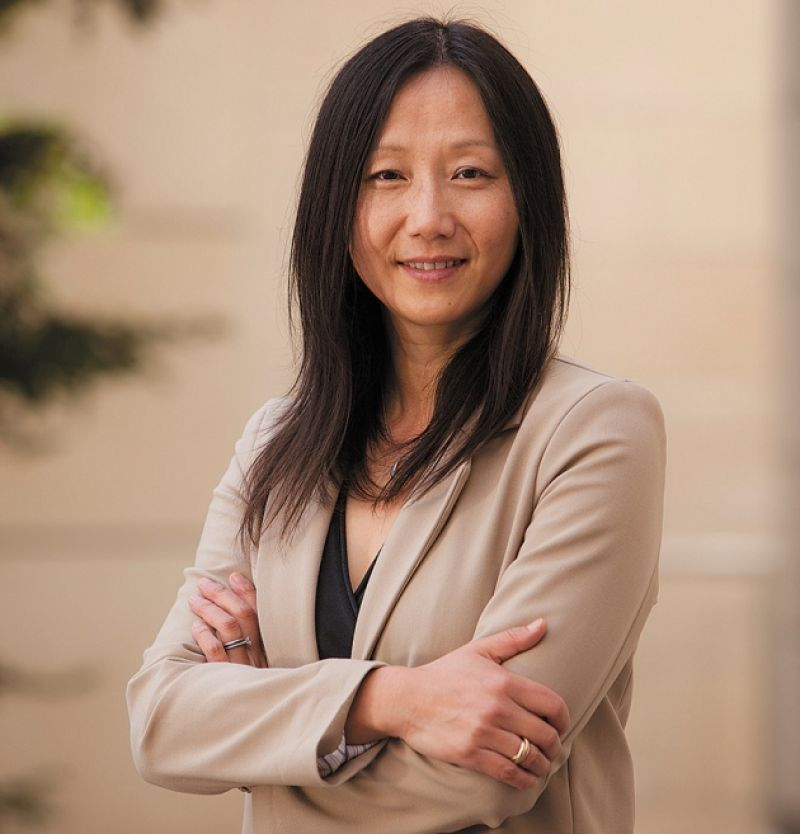
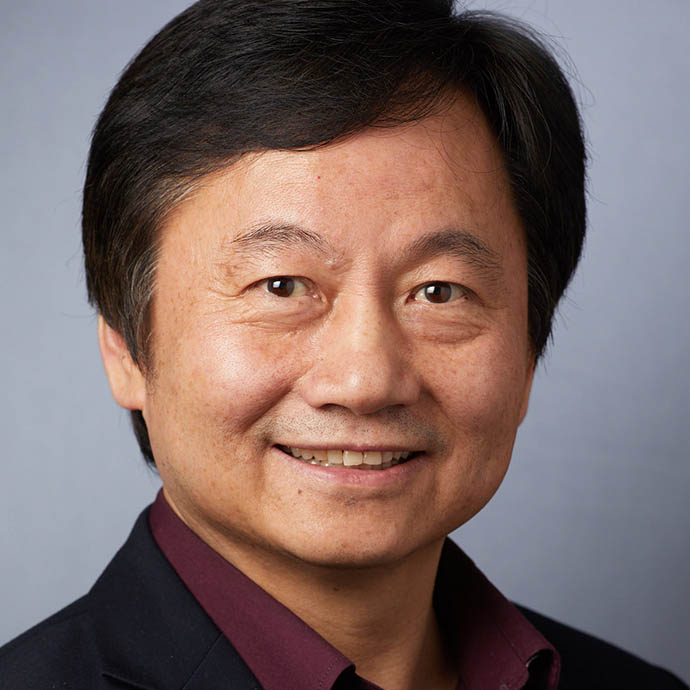
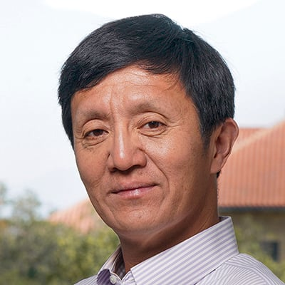

AASF Annual Meeting
AASF Science Roundtables
Sunday, July 26, 2024
Location: Y2E2 299 at Stanford
Speakers & Agenda
[13:30 - 14:30] Session: Artificial Intelligence
 |
||||
| Yiran Chen
Duke University John Cocke Distinguished Professor of Electrical and Computer Engineering and Director of NSF AI Institute for Edge Computing |
Fei-Fei Li
Stanford University Inaugural Sequoia Professor and Co-Director of Human-Centered AI Institute |
Hai "Helen" Li Duke University Professor in the Clare Boothe Luce and Chair of the Electrical and Computer Engineering Department |
Xuedong Huang
Zoom Video Communications CTO |
Dawn Song UC Berkeley Professor in the Department of EECS and Co-director of Center on Responsible Decentralized Intelligence (RDI) |
[14:30 - 14:50] Break
[14:50 - 15:50] Session: Energy & New Materials
|  | ||||
| Zhenan Bao Stanford University K.K. Lee Professor in Chemical Engineering, and with courtesy appointments in Chemistry and Material Science and Engineering |
Gang
Chen MIT Carl Richard Soderberg Professor of Power Engineering |
Yi
Cui Stanford University Fortinet Founders Professor of Engineering, Director of Sustainability Accelerator |
[15:50 - 16:10] Break
[16:10 - 17:10] Session: Life science
|  |  | |||
| Haifan Lin Yale School of Medicine Eugene Higgins Professor of Cell Biology, Professor of Genetics, of Obstetrics, Gynecology, and Reproductive Sciences, and of Dermatology, Founding Director of Yale Stem Cell Center |
Xiaole (Shirley) Liu Co-founder and CEO of GV20 Therapeutics Former Professor of Biostatistics and Computational Biology at Dana-Farber Cancer Institute and Co-Director of the Center for Functional Cancer Epigenetics |
Liqun Luo Stanford University Ann and Bill Swindells Professor in the School of Humanities and Sciences, Professor of Biology, and Professor of Neurobiology by courtesy at Stanford University, and a Howard Hughes Medical Institute Investigator. |